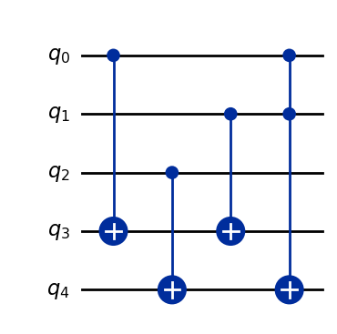

Exporting to other frameworks
Qlasskit implements circuit / gate exporters for Qiskit, Cirq, Qasm, Sympy and Pennylane.
from qlasskit import Qint, qlassf
@qlassf
def hello_world(a: bool, b: Qint[2]) -> Qint[2]:
return b + (1 if a else 0)
Qiskit
qc = hello_world.export("qiskit")
qc.draw("mpl")

QASM
qc = hello_world.export("qasm")
print(qc)
OPENQASM 3.0;
gate hello_world a b.0 b.1 _ret.0 _ret.1 {
cx a _ret.0
cx b.0 _ret.0
cx b.1 _ret.1
ccx a b.0 _ret.1
}
hello_world q[0],q[1],q[2],q[3],q[4];
Cirq
import cirq
qc = hello_world.export("cirq")
qc
0: ───hello_world───
│
1: ───hello_world───
│
2: ───hello_world───
│
3: ───hello_world───
│
4: ───hello_world───Pennylane
import pennylane as qml
tape = hello_world.export("pennylane")
tape
---------------------------------------------------------------------------
AttributeError Traceback (most recent call last)
Cell In[5], line 1
----> 1 import pennylane as qml
3 tape = hello_world.export("pennylane")
4 tape
File /opt/hostedtoolcache/Python/3.11.14/x64/lib/python3.11/site-packages/pennylane/__init__.py:30
27 from pennylane.boolean_fn import BooleanFn
28 from pennylane.queuing import QueuingManager, apply
---> 30 import pennylane.kernels
31 import pennylane.math
32 import pennylane.operation
File /opt/hostedtoolcache/Python/3.11.14/x64/lib/python3.11/site-packages/pennylane/kernels/__init__.py:18
1 # Copyright 2018-2021 Xanadu Quantum Technologies Inc.
2
3 # Licensed under the Apache License, Version 2.0 (the "License");
(...) 12 # See the License for the specific language governing permissions and
13 # limitations under the License.
14 r"""
15 This subpackage defines functions that relate to quantum kernel methods.
16 """
---> 18 from .cost_functions import (
19 polarity,
20 target_alignment,
21 )
22 from .postprocessing import (
23 threshold_matrix,
24 displace_matrix,
(...) 27 mitigate_depolarizing_noise,
28 )
29 from .utils import (
30 kernel_matrix,
31 square_kernel_matrix,
32 )
File /opt/hostedtoolcache/Python/3.11.14/x64/lib/python3.11/site-packages/pennylane/kernels/cost_functions.py:18
1 # Copyright 2018-2021 Xanadu Quantum Technologies Inc.
2
3 # Licensed under the Apache License, Version 2.0 (the "License");
(...) 12 # See the License for the specific language governing permissions and
13 # limitations under the License.
14 """
15 This file contains functionalities for kernel related costs.
16 See `here <https://www.doi.org/10.1007/s10462-012-9369-4>`_ for a review.
17 """
---> 18 from pennylane import numpy as np
19 from ..math import frobenius_inner_product
20 from .utils import square_kernel_matrix
File /opt/hostedtoolcache/Python/3.11.14/x64/lib/python3.11/site-packages/pennylane/numpy/__init__.py:87
84 from autograd import numpy as _np
85 from autograd.numpy import *
---> 87 from .wrapper import wrap_arrays, extract_tensors, tensor_wrapper
89 wrap_arrays(_np.__dict__, globals())
91 # Delete the unwrapped fft, linalg, random modules
92 # so that we can re-import our wrapped versions.
File /opt/hostedtoolcache/Python/3.11.14/x64/lib/python3.11/site-packages/pennylane/numpy/wrapper.py:23
19 import functools
21 from autograd import numpy as _np
---> 23 from .tensor import tensor
26 def extract_tensors(x):
27 """Iterate through an iterable, and extract any PennyLane
28 tensors that appear.
29
(...) 43 [tensor(0.1, requires_grad=True)]
44 """
File /opt/hostedtoolcache/Python/3.11.14/x64/lib/python3.11/site-packages/pennylane/numpy/tensor.py:25
22 from autograd.numpy.numpy_vspaces import ArrayVSpace, ComplexArrayVSpace
23 from autograd.tracer import Box
---> 25 from pennylane.operation import Operator
27 __doc__ = "NumPy with automatic differentiation support, provided by Autograd and PennyLane."
30 # Hotfix since _np.asarray doesn't have a gradient rule defined.
File /opt/hostedtoolcache/Python/3.11.14/x64/lib/python3.11/site-packages/pennylane/operation.py:247
244 from scipy.sparse import coo_matrix, eye, kron
246 import pennylane as qml
--> 247 from pennylane.math import expand_matrix
248 from pennylane.queuing import QueuingManager
249 from pennylane.typing import TensorLike
File /opt/hostedtoolcache/Python/3.11.14/x64/lib/python3.11/site-packages/pennylane/math/__init__.py:110
101 """An interface independent way of getting the name of the datatype.
102
103 >>> x = tf.Variable(0.1)
104 >>> qml.math.get_dtype_name(tf.Variable(0.1))
105 'float32'
106 """
107 return ar.get_dtype_name(x)
--> 110 class NumpyMimic(ar.autoray.NumpyMimic):
111 """Subclass of the Autoray NumpyMimic class in order to support
112 the NumPy fft submodule"""
114 # pylint: disable=too-few-public-methods
AttributeError: module 'autoray.autoray' has no attribute 'NumpyMimic'
Sympy
qc = hello_world.export("sympy")
qc
\[\displaystyle C_{0,1}{\left(X_{4}\right)} \text{CNOT}_{2,4} \text{CNOT}_{1,3} \text{CNOT}_{0,3} {\left|00000\right\rangle }\]
Qutip
# Disabled on docs for a depencency problem
# qc = hello_world.export("qutip")
# qc.gates